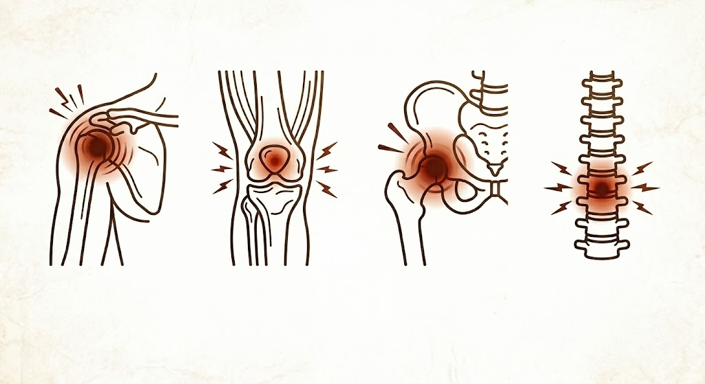

Nowoczesna metoda
Zamroź ból.
Odzyskaj wolność ruchu.
Kriolezja (krioanalgezja) pod kontrolą USG – bezpieczna, małoinwazyjna metoda leczenia przewlekłego bólu. Ulga trwająca od kilku miesięcy do nawet dwóch lat.

Kiedy kriolezja jest ratunkiem?
Życie z przewlekłym bólem wycieńcza organizm, a ciągłe przyjmowanie silnych leków niszczy żołądek i wątrobę. Jeśli rehabilitacja nie przynosi zadowalających efektów, a ból powraca, kriolezja jest idealnym rozwiązaniem. To bezpieczna metoda dedykowana pacjentom cierpiącym na:
- •Bóle kręgosłupa – zwyrodnienia stawów międzywyrostkowych i dyskopatie
- •Bóle stawów biodrowych i kolanowych – również u osób po wszczepieniu endoprotezy
- •Rwa kulszowa oraz rwa barkowa
- •Neuralgie i neuropatie – bóle pooperacyjne, pourazowe, ból po przejściu półpaśca
- •Bóle głowy pochodzenia szyjnego
Droga do życia bez bólu
| Krok 1: Blokada Testowa (Diagnostyczna) | Krok 2: Właściwy Zabieg Kriolezji |
|---|---|
| Co to jest: Krótki zabieg wstępny, podczas którego precyzyjnie podajemy minimalną ilość leku znieczulającego w okolice nerwu. | Co to jest: Celowane, czasowe wyłączenie przewodnictwa nerwu za pomocą niskiej temperatury (ok. –70°C). |
| Cel: Potwierdzenie źródła bólu. Jeśli po blokadzie poczujesz natychmiastową ulgę (na kilka godzin), zyskujemy 100% pewności, który nerw odpowiada za Twój ból. | Cel: Długotrwałe zablokowanie sygnałów bólowych wysyłanych do mózgu, bez uszkadzania struktury samego nerwu. |
| Efekt: Bezpieczna kwalifikacja do kriolezji. Wiemy dokładnie, gdzie działać, eliminując ryzyko zabiegu „na oślep". | Efekt: Błyskawiczna i trwała ulga w bólu trwająca od 6 do nawet 18 miesięcy. |
Małoinwazyjnie, bezpiecznie i pod pełną kontrolą
Komfortowe znieczulenie
Zabieg wykonujemy w warunkach ambulatoryjnych. Miejsce wkłucia jest znieczulane miejscowo – procedura jest dla pacjenta całkowicie komfortowa i praktycznie bezbolesna.
Komputerowa precyzja (USG)
Lekarz wprowadza miniaturową sondę kriochirurgiczną, cały czas śledząc jej ruch na ekranie USG. Gwarantuje to milimetrową dokładność i stuprocentowe bezpieczeństwo ominięcia naczyń krwionośnych.
Szybki powrót do domu
Całość trwa około 15–20 minut. Od razu po zabiegu możesz wstać i opuścić przychodnię. Nie potrzebujesz hospitalizacji ani długiej rekonwalescencji. Efekt niemal natychmiastowy.
Najczęściej zadawane pytania
Zadzwoń i umów się na konsultację